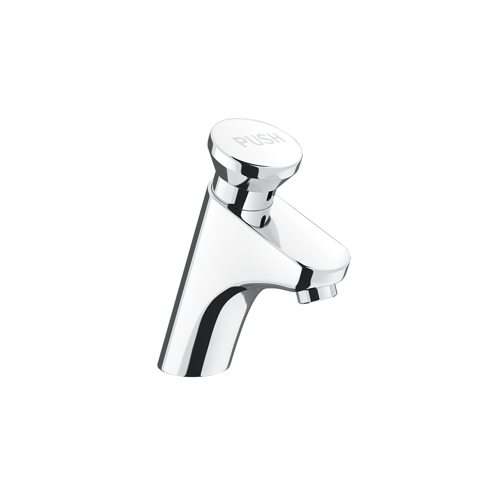
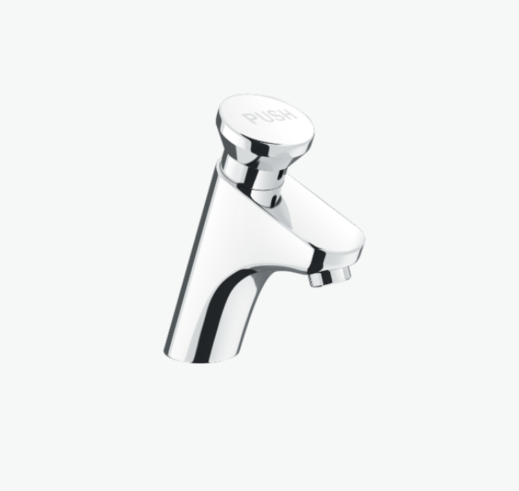
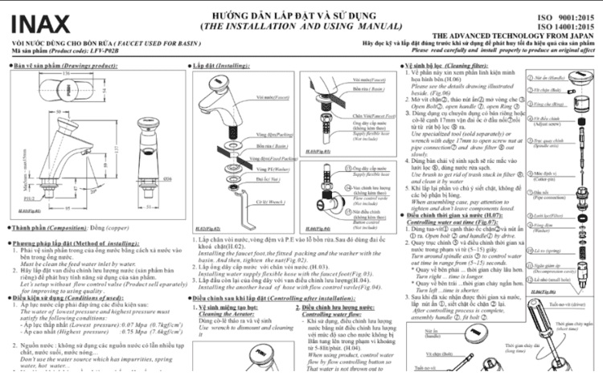

Vòi chậu nước lạnh LFV-P02B được thiết kế chuyên biệt, kết hợp giữa công nghệ hiện đại với tiêu chuẩn bền bỉ của Nhật Bản, mang đến sự tiện ích vượt trội cho các công trình dân dụng như nhà hàng, trường học, bệnh viện, trung tâm thương mại và nhà ở. Ưu điểm của vòi chậu nước lạnh LFV-P02BTối ưu hóa vệ sinh với chế độ ngắt nước tự độngĐiểm nổi bật nhất của LFV-P02B là chế độ rửa bán tự động (tự động ngắt nước). Khi người dùng nhấn nút kích hoạt, vòi sẽ xả nước trong một khoảng thời gian cố định và tự động ngắt. Nhờ vào chế độ này, sản phẩm mang đến những lợi ích sau khi sử dụng:Kiểm soát vệ sinh: Cơ chế này giúp hạn chế tối đa việc người dùng chạm tay vào vòi lần thứ hai để khóa nước, giảm thiểu sự lây lan của vi khuẩn và mầm bệnh, đặc biệt quan trọng trong môi trường công cộng.Tiết kiệm nước: Chế độ ngắt nước tự động đảm bảo không có tình trạng lãng phí nước do quên khóa vòi, từ đó kiểm soát chi phí vận hành và thân thiện hơn với môi trường.Lưu ý: LFV-P02B chỉ sử dụng một đường nước lạnh, phù hợp với hầu hết các yêu cầu vệ sinh cơ bản của khu vực công cộng.Chất lượng và độ bền chuẩn Nhật BảnVòi chậu rửa mặt INAX LFV-P02B được sản xuất trên dây chuyền công nghệ hiện đại của Nhật Bản, đảm bảo chất lượng và độ tin cậy tuyệt đối. Bề mặt sản phẩm được phủ lớp mạ Crom/Niken dày dặn, không chỉ mang lại vẻ ngoài sáng bóng và sạch sẽ mà còn cung cấp khả năng chống ăn mòn và oxy hóa tuyệt vời. Với lớp mạ này, LFV-P02B có thể giữ được độ bền đẹp theo thời gian, ngay cả trong điều kiện sử dụng khắc nghiệt của khu vực công cộng.Ngoài ra, thiết kế và vật liệu cấu tạo vòi nước lạnh LFV-P02B được tối ưu hóa để chịu được tần suất sử dụng lớn và lâu dài, giúp tiết kiệm chi phí bảo trì và thay thế.Lựa chọn tối ưu cho không gian công cộngVới tất cả các tính năng nổi bật về khả năng ngắt nước tự động, đảm bảo vệ sinh và độ bền vượt trội, vòi chậu nước lạnh INAX LFV-P02B chính là sự lựa chọn tối ưu cho các lavabo trong phòng vệ sinh công cộng và phòng vệ sinh gia đình. Tuy nhiên, để bảo vệ lớp mạ bền đẹp, bạn không nên vệ sinh sản phẩm bằng chất tẩy rửa có tính axit mạnh vì chúng có thể làm hỏng bề mặt vòi.Hướng dẫn lắp đặt vòi chậu đặt bàn LFV-P02BXem thêm file hướng dẫn: User manual_UM-0011(LFV-P02B)_V2_25Sep2020.pdfThông số kỹ thuậtTên sản phẩmVòi chậu nước lạnh LFV-P02BChất liệuMạ Crom-NikenKích thước-Đặc điểmNgắt nước tự độngThương hiệuINAXKhácHotline tư vấn và bảo hành: 18006633
Vòi chậu nước lạnh LFV-P02B
Vòi chậu thương hiệu INAX.
Đã cập nhật danh sách yêu thích.
DANH MỤC: Vòi chậu
MÃ SẢN PHẨM: LFV-P02B
DEPTH: mm
HEIGHT: mm
WIDTH: mm
Vòi chậu nước lạnh LFV-P02B được thiết kế chuyên biệt, kết hợp giữa công nghệ hiện đại với tiêu chuẩn bền bỉ của Nhật Bản, mang đến sự tiện ích vượt trội cho các công trình dân dụng như nhà hàng, trường học, bệnh viện, trung tâm thương mại và nhà ở. Ưu điểm của vòi chậu nước lạnh LFV-P02BTối ưu hóa vệ sinh với chế độ ngắt nước tự độngĐiểm nổi bật nhất của LFV-P02B là chế độ rửa bán tự động (tự động ngắt nước). Khi người dùng nhấn nút kích hoạt, vòi sẽ xả nước trong một khoảng thời gian cố định và tự động ngắt. Nhờ vào chế độ này, sản phẩm mang đến những lợi ích sau khi sử dụng:Kiểm soát vệ sinh: Cơ chế này giúp hạn chế tối đa việc người dùng chạm tay vào vòi lần thứ hai để khóa nước, giảm thiểu sự lây lan của vi khuẩn và mầm bệnh, đặc biệt quan trọng trong môi trường công cộng.Tiết kiệm nước: Chế độ ngắt nước tự động đảm bảo không có tình trạng lãng phí nước do quên khóa vòi, từ đó kiểm soát chi phí vận hành và thân thiện hơn với môi trường.Lưu ý: LFV-P02B chỉ sử dụng một đường nước lạnh, phù hợp với hầu hết các yêu cầu vệ sinh cơ bản của khu vực công cộng.Chất lượng và độ bền chuẩn Nhật BảnVòi chậu rửa mặt INAX LFV-P02B được sản xuất trên dây chuyền công nghệ hiện đại của Nhật Bản, đảm bảo chất lượng và độ tin cậy tuyệt đối. Bề mặt sản phẩm được phủ lớp mạ Crom/Niken dày dặn, không chỉ mang lại vẻ ngoài sáng bóng và sạch sẽ mà còn cung cấp khả năng chống ăn mòn và oxy hóa tuyệt vời. Với lớp mạ này, LFV-P02B có thể giữ được độ bền đẹp theo thời gian, ngay cả trong điều kiện sử dụng khắc nghiệt của khu vực công cộng.Ngoài ra, thiết kế và vật liệu cấu tạo vòi nước lạnh LFV-P02B được tối ưu hóa để chịu được tần suất sử dụng lớn và lâu dài, giúp tiết kiệm chi phí bảo trì và thay thế.Lựa chọn tối ưu cho không gian công cộngVới tất cả các tính năng nổi bật về khả năng ngắt nước tự động, đảm bảo vệ sinh và độ bền vượt trội, vòi chậu nước lạnh INAX LFV-P02B chính là sự lựa chọn tối ưu cho các lavabo trong phòng vệ sinh công cộng và phòng vệ sinh gia đình. Tuy nhiên, để bảo vệ lớp mạ bền đẹp, bạn không nên vệ sinh sản phẩm bằng chất tẩy rửa có tính axit mạnh vì chúng có thể làm hỏng bề mặt vòi.Hướng dẫn lắp đặt vòi chậu đặt bàn LFV-P02BXem thêm file hướng dẫn: User manual_UM-0011(LFV-P02B)_V2_25Sep2020.pdfThông số kỹ thuậtTên sản phẩmVòi chậu nước lạnh LFV-P02BChất liệuMạ Crom-NikenKích thước-Đặc điểmNgắt nước tự độngThương hiệuINAXKhácHotline tư vấn và bảo hành: 18006633
DANH MỤC: Vòi chậu
MÃ SẢN PHẨM: LFV-P02B
DEPTH: mm
HEIGHT: mm
WIDTH: mm